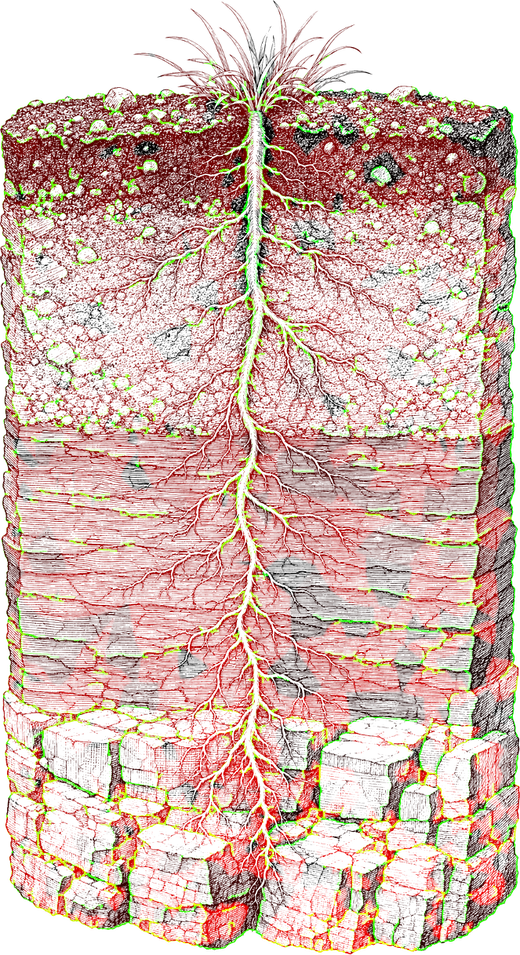
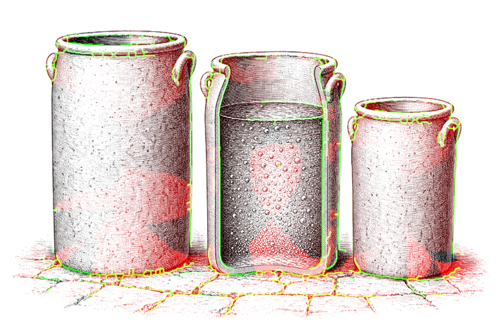
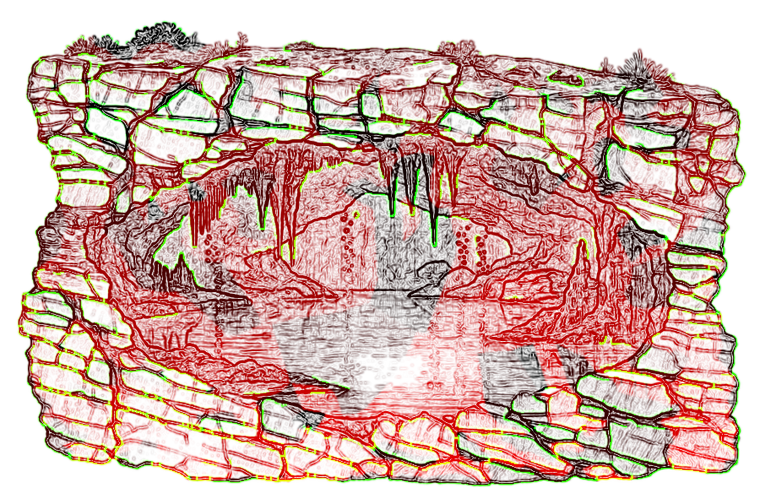
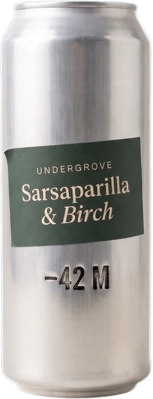
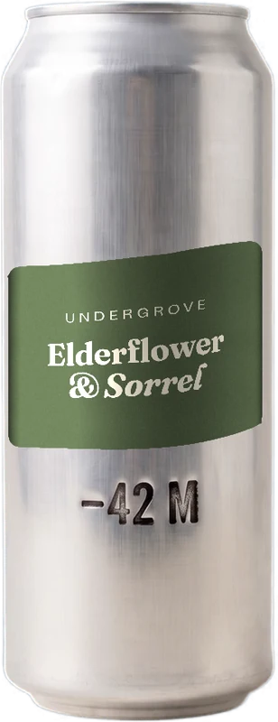
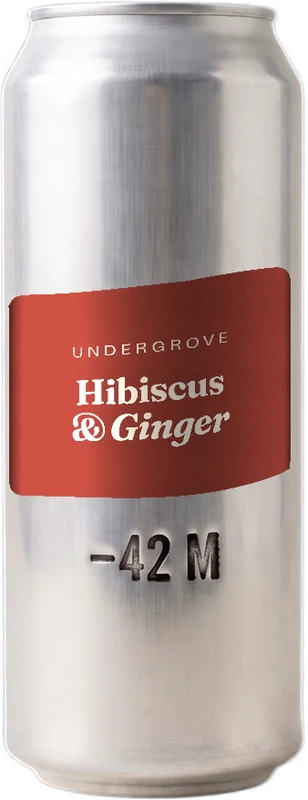
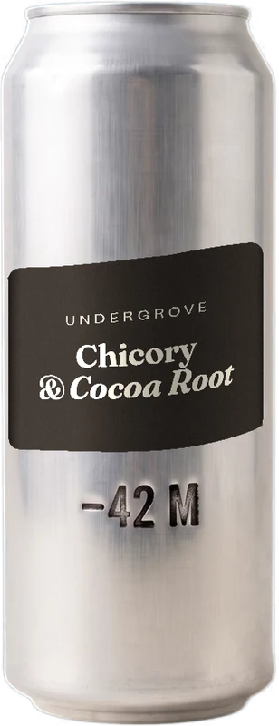
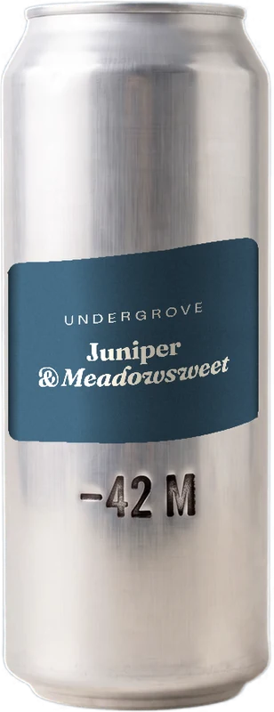

Chicory root
Cichorium intybus
Roasted dark for the cola note and for the fibre. The bitterness is deliberate: it is what stops a soda from tasting like a dessert.
Nine whole roots, barks and flowers, fermented twenty-one days in the dark. No cane sugar, no isolates, no flavour powder. The bitterness is the plant, and the fibre comes with it.
We buy whole roots and dried barks from three farms inside nine kilometres of the cellar, and mill them the week they arrive. What you taste is the plant itself, not a factory's copy of it. Three of the nine are drawn below.
Roasted dark for the cola note and for the fibre. The bitterness is deliberate: it is what stops a soda from tasting like a dessert.
Steam-drawn, never distilled down to an oil. It carries the wintergreen lift that makes the first sip read cold even at room temperature.
Cold-steeped so it stays red instead of turning brown. It carries all of the acidity in three of the five. No citric acid is added.


That is how long a lactic culture needs to eat the sugar down from eleven grams a litre to under three. It returns acid and carbon dioxide, never alcohol.
| Stage | Lactic culture pitched |
| Cellar temperature | 19.0 °C |
| Residual sugar | 11.0 g/l |
| Alcohol | under 0.5 % ABV |
Drawn from a confined limestone aquifer beneath the plain: rain that fell long before the town above it was built. We filter out the particles and change nothing else. Every number in the table below is the one the rock put there.

Fig. 5 · the confined aquifer, in section
| Analysis at source | Value |
|---|---|
| Bicarbonate | 0mg/l |
| Calcium | 0mg/l |
| Reaction | 0pH |
| Depth of draw | 0metres |





Twelve cans, mixed or matched, delivered. Or leave a postcode and we will name the nearest shelf that already stocks it.